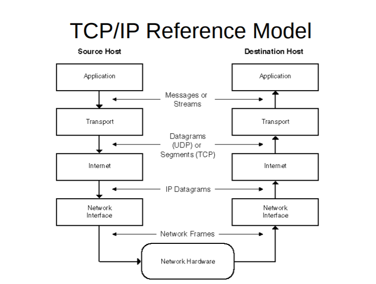

Model Referensi TCP/IP

Port pada protokol jaringan TCP/IP adalah mekanisme yang mengizinkan sebuah komputer untuk mendukung
beberapa sesi koneksi dengan komputer lainnya dan program di dalam jaringan. Port dapat mengidentifikasikan
aplikasi dan layanan yang menggunakan koneksi di dalam jaringan TCP/IP. Sehingga, port juga mengidentifikasikan
sebuah proses tertentu di mana sebuah server dapat memberikan sebuah layanan kepada klien atau bagaimana
sebuah klien dapat mengakses sebuah layanan yang ada dalam server. Port dapat dikenali dengan angka 16-Bit (dua
byte) yang disebut dengan Port Number dan diklasifikasikan dengan jenis protokol transport apa yang digunakan, ke
dalam Port TCP dan Port UDP. Karena memiliki angka 16-bit, maka total maksimum jumlah port untuk setiap protokol
transport yang digunakan adalah 65536 buah.
Pada terminologi jaringan komputer, port merupakan titik komunikasi spesifik yang digunakan oleh sebuah aplikasi yang memanfaatkan
lapisan transport pada teknologi TCP / IP. Pada terminologi komputer ada dua jenis Port yaitu :
Dilihat dari penomorannya, port UDP dan TCP dibagi menjadi tiga jenis, yakni sebagai berikut:
User Datagram Protocol (UDP) merupakan salah satu jenis protokol internet. Melalui UDP, sebuah aplikasi komputer
dimungkinkan untuk mengirim pesan kepada komputer lain di sebuah jaringan tanpa perlu melalui proses komunikasi awal.
UDP memiliki karakteristik utama berupa “connectionless”, artinya, pesan yang dikirimkan melalui UDP bisa sampai tanpa
memerlukan proses negosiasi koneksi antara dua komputer host yang ingin bertukar info. Selain itu, karakteristik UDP lainnya
adalah “unreliable”, artinya semua pesan yang dikirimkan tidak memiliki nomor urut atau pesan pemberitahuan. Jika selama
transmisi ada pesan-pesan yang hilang, maka protokol aplikasi yang letaknya di atas UDP harus memulihkan pesan tersebut.
Seperti juga pada kasus TCP,UDP pun memiliki sebuah saluran (channel) yang berguna untuk menghubungkan host antar host untuk
saling berkirim informasi. Channel ini kemudian disebut dengan port UDP. Agar dapat terhubung dengan protokol UDP, aplikasi pada
komputer terlebih dahulu perlu menyediakan alamat IP serta nomor port UDP dari host yang ingin dituju.
Port UDP ini berguna sebagai sebuah multiplexed message queue. Artinya, port UDP tersebut kemudian mampu bekerja dengan menerima
beberapa pesan secara bersamaan. Setiap port UDP memiliki identifikasi dengan nomor yang unik, namun memiliki pembagian tersendiri
seperti yang telah dijelaskan sebelumnya.
Walaupun cukup bermanfaat, namun UDP sendiri memiliki beberapa kelemahan dalam cara kerjanya. Misalnya saja, UDP tidak memfasilitasi
mekanisme buffering data masuk dan keluar. Selain itu, UDP juga tak memfasilitasi segmentasi data yang ukurannya besar untuk disederhanakan
ke dalam segmen-segmen data, yang bisa dilakukan dengan TCP. Dalam protokol UDP juga tidak terdapat mekanisme flow-control seperti
layaknya TCP.
Metode Error detection yang dilakukan dengan melakukan penjumlahan pada sekumpulan data, dimana
hasil dari penjumlahan tersebut akan dicomplement dan hasilnya akan ditambahkan pada data sebagai
sebuah karakter.penjumlahan karakter dalam data inilah yang disebut dengan checksum.
menjumlahkan (ones complement) semua data yang ditransmisikan dan mengirim hasil penjumlahan
ke penerima. Hasil penjumlahan disebut checksum, penerima harus menjumlahkan data yang diterima
juga menggunakan ones complement, yang nantinya akan dicocokkan dengan checksum. Jika hasilnya
tidak sama, maka terjadi error pada data.
Contoh 1:
Misalkan blok data 16 bit di bawah ini akan dikirim menggunakan checksum 8 bit.
10101001 00111001
Data diatas ditambahkan dengan menggunakan one’s complement
. 10101001
. 00111001
Sum 11100010
Checksum 00011101
Maka bentuk data yang dikirimkan adalah
10101001 001110011 00011101
Contoh 2:
Sekarang, misalkan si penerima menerima data
10101001 00111001 00011101
Ketika si penerima menambahkan tiga bagian data, maka akan didapatkan 1s, yang mana,
setelah dikomplemenkan hasil semuanya adalah nol dan hal tersebut menunjukan data yang
diterima tidak terdapat error.
. 10101001
. 00111001
. 00011101
Sum 11111111
Complement 00000000 berarti data OK.
Makassar, South Sulawesi, Indonesia
© by Andi Besse Adya Febryana Adiaspoetri